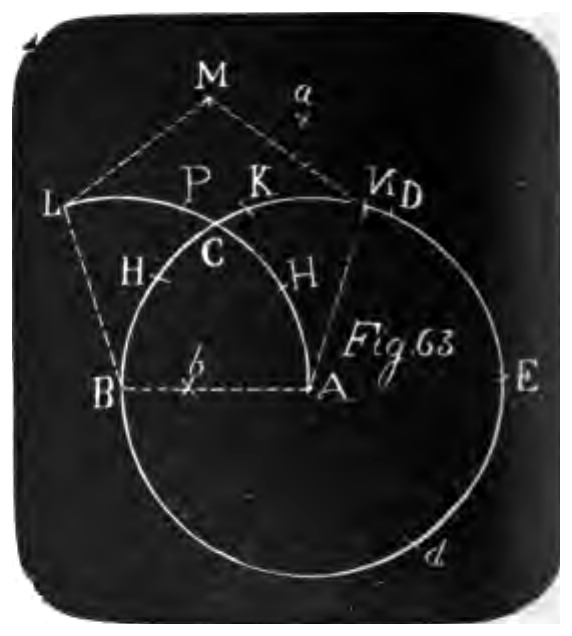

§§ 135–142: Regular Polygons on a Given Side¶
135. Prob. Upon a given side \(AE\) to construct an equilateral triangle (Fig. 1).
Sol. Let point \(D\) be found as in § 1. \(ADE\) will be the triangle sought.
136. Prob. Upon a given side \(AB\) to construct a square.
Sol. Let the two points \(F, T\) be found as in § 100. \(ABTF\) will be the square sought (fig. 43).
Dem. Since it was there demonstrated that \(BT\) is equal and parallel to \(FA\), and therefore perpendicular to \(AB\); \(FT\) also will be parallel to \(BA\) (I.33). Hence angles \(BTF, AFT\) also will be right (I.27), and \(ABTF\) a square (I, Def. 32).
137. Prob. Upon a given side \(AB\) to construct a regular pentagon (Fig. 63).


Sol. I. With radius \(AB\), center \(A\), let the circumference \(BCDEd\) be described, and let \(AB = BC = CD = DE = Ed\) be made. Let \(BD = Ba = Ea\) be made. Then let \(Aa = Db = db\) be made. With center \(B\),
f. 0100 · p. 75radius \(BA\), let the indefinite arc \(ACL\) be described. Upon it let \(Ab = AH = HP = PL\) be made. Likewise in the circumference \(BCD\) let \(Ab = BQ = QK = KN\) be made. With centers \(L\) and \(N\), and radius \(AB\), let two arcs be struck cutting each other at \(M\). Points \(A, B, L, M, N\) will be the vertices of the regular pentagon sought.
Dem. Angle \(CBF\) (Fig. 61) of the regular pentagon \(BCDEF\) is measured by half of arc \(CDEF\) (III.20). Since therefore this arc is equal to three fifths of the circumference, angle \(CBF\) of the pentagon is measured by three tenths. Now arcs \(AHPL\), \(BQKN\), which measure angles \(ABL\), \(BAN\), are each three tenths of the circumference (§ 41). Therefore angles \(ABL\), \(BAN\) are the angles of the regular pentagon to be constructed upon \(AB\). Moreover the three sides \(AB, BL, AN\) are also equal to one another, that is, sides of that pentagon. Comparing then points \(L, B, A, N\) of this Figure 63 with points \(C, B, F, E\) of Fig. 61, triangle \(LMN\) of this Figure, having its sides equal respectively to the sides of triangle \(CDE\) (Fig. 61), will also have equal angles (I.8), and everything will coincide. Therefore etc.
Sol. II. Having described, as above, with radius \(AB\), center \(A\) the circumference \(BDd\) (fig. 64), and having made therein \(AB = BC = CD = DE = Ed\); and \(BD = Ba = Ea\); and \(Aa = Db = db\); with radius \(bE\), and center \(A\) let an arc be struck passing through \(L\) and \(M\). With the same radius \(bE\), and center \(B\), let this arc be cut at \(M\) and the circumference at \(N\). Finally with the same radius, and center \(N\), let arc \(LM\) be cut at \(L\). Points \(A, B, L, M, N\) will be the vertices of the regular pentagon.
Dem. We have \((BE)^2 = (bE)^2 + (Bb)^2 + 2Bb \cdot bE\) (II.4). Then angle \(BNE\) being in the semicircle, we have (III.31, I.47) \((BE)^2 = (BN)^2 + (NE)^2\). Comparing the two values of \((BE)^2\), in which \((bE)^2 = (BN)^2\), there results \((Bb)^2 + 2Bb \cdot bE = (NE)^2\). Since moreover \(bE = bA + AE = Ab + AB\), we shall have \((Bb)^2 + 2Bb \cdot Ab +\)
f. 0101 · p. 76\(2Bb \cdot AB = (NE)^2\). But \(2Bb \cdot AB = 2(Ab)^2\) (§ 46). Therefore \((Bb)^2 + 2Bb \cdot Ab + (Ab)^2 + (Ab)^2 = (NE)^2\). But \((Bb)^2 + 2Bb \cdot Ab + (Ab)^2 = (AB)^2\). Therefore \((AB)^2 + (Ab)^2 = (NE)^2\). Therefore \(NE\) will be the side of the pentagon inscribed in circle \(BDd\) (§ 50) (XIII.10); hence arc \(NE\) being equal to two tenths of the circumference, arc \(BCN\) will be equal to three tenths, and angle \(BAN\) will be the angle of the regular pentagon. Moreover \(BN\) being subtended by the two sides \(BA, AN\) of the regular pentagon, it will be the side of the isosceles triangle which has \(AB\) for base and each of the angles at the base double the angle at the vertex (IV.11). Therefore points \(L\) and \(M\) will also be vertices of the regular pentagon.
138. Prob. Upon a given side \(AB\) to construct a regular hexagon (Fig. 65).

Sol. With radius \(AB\), and centers \(A\) and \(B\), let two arcs be struck cutting each other at \(O\). With the same radius, and center \(O\), let a circle be described, and in its circumference let \(AB = BC = CD = DE = EF\) be made. \(ABCDEF\) will be the regular hexagon sought.
For the Demonstration see IV.15.
139. Prob. Upon a given side \(AB\) to construct a regular octagon (Fig. 66).

Sol. I. With radius \(AB\), and centers \(A\) and \(B\), let the two semicircles \(BCDE\), \(ACde\) be described (§ 64). Let \(CE = Ea = Ba = A\alpha = e\alpha\) be made. With radius \(AB\), center \(a\), let arc \(DE\) be cut at \(H\). With the same radius, and center \(\alpha\), let arc \(de\) be cut at \(h\). With the same radius, and centers \(H\) and \(h\), let two arcs be struck passing through \(G\) and \(g\). With
f. 0102 · p. 77radius \(Ba\), and centers \(a\) and \(\alpha\), let these arcs be cut at \(g\) and \(G\). With radius \(AB\), and centers \(G\) and \(g\), let two arcs be struck passing through \(F\) and \(f\). With radius \(Aa\), and centers \(a\) and \(\alpha\), let these two arcs be cut at \(f\) and \(F\). Points \(A, B, h, g, f, F, G, H\) will be the vertices of the regular octagon constructed upon side \(AB\).
Dem. Sides \(AB, Bh, hg, gf, AH, HG, GF\) are all equal by construction. Now if a regular octagon inscribed in the circle be considered, it will be found that each of its angles at the circumference has for base an arc equal to six eighths of it, and therefore is measured by three eighths (III.20). We have moreover arc \(CH\) equal to three eighths (§ 30). Therefore angle \(BAH\) is that of the octagon. Likewise so is angle \(ABh\). Moreover \(aA\), \(\alpha B\) being perpendicular to \(AB\) (§ 27), they will be parallel to each other (I.28). Therefore \(Ha\), which makes half a right angle with \(aA\) (§ 27), will also make one with \(\alpha B\) (I.27); but \(hBa\) is also half a right angle; therefore \(aH\) is parallel to \(hB\) (I.28). Therefore \(aH\) is also equal and parallel to \(HB\) (I.33). Hence angle \(haH = hBH\) (I.34). Now angle \(hBH = hBE - HBE = hBE - HAE\) (III.20). It will therefore have for measure \(\frac{3}{8} - \frac{1}{16}\) of the circumference, that is \(\frac{5}{16}\) of it: therefore angle \(Bha\), which together with angle \(haH\) equals two right angles (I.27), will have for measure \(\frac{3}{16}\) of the circumference. Moreover in the two triangles \(ahB\), \(ahg\) all the sides being equal to one another, angle \(ahg = Bha\) (I.8). Hence the whole angle \(ghB\) will have for measure \(\frac{3}{8}\) of the circumference, and will be an angle of the octagon. Likewise so will angle \(AHG\). Moreover angle \(hga = hBa\). And the two triangles \(gfa\), \(ABa\) likewise having their angles equal to one another, angle \(fga = ABa\) (I.8). Hence angle \(hgf\) is composed of two angles equal respectively to two which compose angle \(hBA\). It will therefore be equal to it, and hence will be an angle of the octagon. Likewise so will angle \(HGF\). Points \(f\) and \(F\) will also be vertices of the octagon like all the rest.
Sol. II. With radius \(AB\), and centers \(A\) and \(B\), having described as above the two semicircles \(BCDE\), \(ACde\), and made \(CE = Ea = Ba = A\alpha = e\alpha\); again with radius \(AB\), and center \(a\), let an arc be struck cutting arc \(DE\) at \(H\), and passing through \(F\). With the
f. 0103 · p. 78same radius, center \(\alpha\), let an arc be struck cutting arc \(de\) at \(h\), and passing through \(f\). With radius \(aA\), center \(a\), let an arc be struck passing through \(f\). With the same radius, center \(\alpha\), let an arc be struck passing through \(F\). With radius \(AB\), and centers \(H\) and \(F\); \(h\) and \(f\), let arcs be struck cutting each other at \(G\), and \(g\).
Dem. Since by the demonstration of Solution I, \(AB, a\alpha\) are parallel and equal to each other, as are the two \(aA, \alpha B\), which make right angles with them; setting for brevity \(AB = 1\), we shall also have \(a\alpha = \alpha f = aF = 1\). We have moreover \((Aa)^2 = 2 = (af)^2 = (\alpha F)^2\). Hence angles \(f\alpha a, Fa\alpha\) will be right (I.48), and points \(f, \alpha, B\) in the same straight line (I.14), and points \(F, a, A\) in the same parallel. Moreover \(f\alpha, Fa\) being also equal, \(fF\) will be parallel and equal to \(\alpha a = 1\), and \(Fa\alpha f\) a square. Then the two triangles \(FGa, HGa\) having their sides equal to each other will also have equal angles (I.8), and angle \(FGa = GaH\); hence the two \(GH, Fa\) will be parallel, and hence also the two \(FG, aH\) (I.33). But angle \(FaH\), exterior to triangle \(aHA\), is equal to the two opposite interior angles \(aHA, aAH\) (I.32), that is, to three half right angles; therefore angle \(FaH = BAH\); therefore the opposite angles in parallelograms being equal (I.34), \(FGH = BAH\) also. We have moreover angle \(AaH = aHG\), and \(AHa\) is right; therefore angle \(AHG\) also equals three half right angles. Likewise angle \(fFa\) being right, and \(aFG = aHG\) half a right angle, angle \(fFG\) will also be equal to three half right angles. The same is demonstrated of the angles at \(f\), \(g\), and \(h\). All the sides and all the angles being therefore equal, the Figure will be a regular octagon.
If we quadruple both members of the equation (§ 15) \((QM)^2 = (AQ)^2 - (AM)^2\), which belongs to Fig. 3, we shall have \(4(QM)^2 = 4(AQ)^2 - 4(AM)^2\), that is, \((Qq)^2 = 4(AQ)^2 - (AB)^2\); whence follows for every rhombus the theorem: the square on one diagonal of the rhombus equals four squares on one of its sides, less the square on the other diagonal. Therefore in the rhombus \(FaHG\) we shall have \((aG)^2 = 4(Fa)^2 - (FH)^2\). But angle \(FGH = HAB\), and the sides containing those two angles being equal, \(FH = BH\) also results (I.4). We shall therefore have \((aG)^2 = 4(AB)^2 - (BH)^2 = (BE)^2 - (BH)^2\). But \((BE)^2 = (BH)^2 + (HE)^2\) (III.31, I.47). Therefore \((aG)^2 = (HE)^2\), and hence \(aG = HE\).
Sol. III. With radius \(AB\), and center \(A\), having described the
f. 0104 · p. 79semicircle \(BCDE\) (§ 64) (fig. 67), and made \(BD = Ba = Ea\); with radius \(AB\), center \(a\), let an arc be struck cutting arc \(DE\) at \(H\), and passing through \(F\). With radius \(aA\), center \(a\), let an arc be struck passing through \(f\). With radius \(aB\), center \(a\), let an arc be struck passing through \(g\). With radius \(BH\), center \(a\), let an arc be struck passing through \(h\). With radius \(HE\), center \(a\), let an arc be struck passing through \(G\). Let \(AB = Bh = hg = gf = fF = FG\) be made. \(FG = GH\), etc. will also follow.
Dem. The triangles \(aAB, aBh, ahg, agf\), etc., which have their vertex at \(a\) and their bases upon the sides of the Figure, have all their sides equal respectively to the sides of the triangles of the same letters in Figure 66 (see the two preceding demonstrations). Therefore they will also have equal angles (I.8). And being similarly placed in order, the angles of the Figure also, which are composed of the angles of these triangles taken two by two, will be equal to the angles of the other Figure. Therefore etc.
Sol. IV. With radius \(AB\), and center \(A\) (fig. 68), having described the semicircle \(BCDE\) by making therein \(AB = BC = CD = DE\), and made \(BD = Ba = Ea\), and with radius \(AB\), center \(a\) having cut the semicircle at \(H\), with radius \(EH\), and centers \(E\) and \(A\), let two arcs be struck cutting each other at \(P\). With the same radius \(PA\), center \(P\), let the semicircle be cut at \(Q\). With radius \(BQ\), and centers \(B\) and \(H\), let two arcs be struck cutting each other at \(O\). Now with center \(O\), and the same radius \(OH\), let a circle be described, which will pass through \(A\). In its circumference let
f. 0105 · p. 80\(AB = Bh = hg = gf = fF = FG\) be made. Points \(A, B, h, g, f\), etc. will be the vertices of the octagon.
Dem. Since \(QP = AP = EP\), and likewise \(QA = AE = AB\), and \(AB\) is on the continuation of \(AE\) (VI.15), we shall have (§ 22) \(BQ \cdot AP = (AQ)^2\). Hence \(AP : AQ :: AQ : BQ\) (VI.17), or \(HE : AE :: AB : BO\). But \(HE\) is a side of the octagon inscribed in the circle of radius \(AE\). Therefore \(AB\) also will be a side of the octagon inscribed in the circle of radius \(BO\).
140. Prob. Upon a given side \(AB\) to construct a regular decagon (Fig. 69).

Sol. With center \(A\), and radius \(AB\), let circle \(BDd\) be described. In its circumference let \(AB = BC = CD = DE = Ed\) be made. Let \(BD = Ba = Ea\) be made. Then let \(Aa = Db = db\) be made. Now with radius \(bE\), and centers \(A\) and \(B\), let two arcs be described cutting each other at \(V\). With the same radius \(bE\), and center \(V\), let circle \(BLMNOPQRSA\) be described, and let \(AB = BL = LM = MN = NO = OP = PQ = QR = RS\) be made. Point \(S\) will be in the intersection of the two circumferences, and we shall have at points \(A, B, L, M\), etc. the ten vertices of the regular decagon sought.
Dem. \(bE\) is a side of the isosceles triangle which, having \(AB\) for base, has the angles at the base each double the angle at the vertex (§ 137). Therefore in triangle \(VAB\) angle \(BVA\) will be equal to one fifth of two right angles (I.32). Therefore arc \(BA\), which measures it, will be equal to one tenth of the circumference, as will be the other arcs \(BL, LM, MN\), etc. Therefore the polygon \(ABLMNOPQRS\) will be a regular decagon inscribed in the circle of center \(V\) and constructed upon side \(AB\).
f. 0106 · p. 81141. Prob. Upon a given side \(AB\) to construct any regular polygon (fig. 69) among those which can be inscribed in a circle (§ 128).
Sol. With radius \(AB\) let a circle \(BDd\) be described. In it let a regular polygon similar to that which is to be constructed upon side \(AB\), that is, of an equal number of sides, be inscribed (§ 128); and let \(Bl\) be a side of this inscribed polygon. To this side \(Bl\) and to radius \(AB\) let the third proportional be found (§§ 87, 89, 90, 91, 92). With this taken as radius, and with centers \(A\) and \(B\), let two arcs be struck cutting each other at \(V\). With the same radius \(VA\), center \(V\), let a circle \(ABLMN\), etc., be described, and let \(AB = BL = LM = MN\) etc. be made. Points \(A, B, L, M, N\), etc. will be the vertices of the polygon sought.
Dem. Triangle \(BAl\) having its sides proportional to the sides of triangle \(BVA\), angle \(BAl = BVA\) (VI.5). Therefore arcs \(Bl\), \(BA\), which measure them, will be equal portions of their circumferences. Therefore etc.
142. Prob. To construct (fig. 70) a square about a given diagonal \(AB\).
Sol. With radius \(AB\), center \(A\), let arc \(BCDE\) be described. With the same radius, and center \(B\), let the indefinite arc \(CP\) be described, and let \(BC = CD = DE\) be made. Then let \(BD = Ba = Ea\) be made. Now with radius \(Aa\), and center \(E\), let arc \(CP\) be cut at \(P\). With radius \(AP\), and centers \(A\) and \(B\), let two arcs be struck cutting each other at \(L\) and \(M\). \(ALBM\) will be the square sought.
Dem. If for brevity we suppose \(AB = 1\), we shall have \(AP = \frac{1}{2}\sqrt{2}\) (§ 104) \(= AL = BL\). Hence \((AL)^2 = (BL)^2 = \frac{1}{2}\), and \((AL)^2 + (BL)^2 = 1 = (AB)^2\). Therefore angle \(BLA\) is right (I.48), and the two mutually equal angles \(LBA\), \(LAB\) are half right angles (I.5 and 32). In like manner angle \(BMA\) will be demonstrated to be right, and angles \(MBA\), \(MAB\) half right angles. Therefore angles \(MBL\), \(MAL\) will be right, and \(ALBM\) will be the square sought.